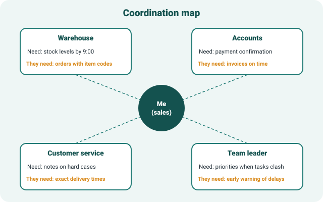

K8 · Teamwork and respecting differences › Level 3 Secure
Work with colleagues in other teams and disagree respectfully
This lesson completes Sheet 6: Coordination map. Print template.
1. Objectives
- Draw a coordination map: your contacts, what you need from them, what they need from you.
- Raise a disagreement in 3 parts: what you observed, your reason, a proposal to try.
2. Retrieval warm-up
- What are the 3 points of a message reporting a mistake?
- What are the 4 review questions?
Answers
- What went wrong; who is affected; what you are doing.
- What did I plan? What actually happened? Why was it different? What will I do next time?
Review: When work goes off plan.
3. Explanation
Most of your work needs someone else to do a step before or after you. New people often know only their own team. Work tends to get stuck where teams meet.
A coordination map. Write your name in the middle. Around it, write the contacts you work with most. For each contact, write two lines.

The line "What they need from me" matters most. Do that well, and they will be glad to help you. If you do not know, ask: "How should I send this so it's easiest for you to take it from there?"
Hand over in 3 lines. When you pass work to someone, send:
A handover message
- DoneWhat exists now, and where it is.
- Still to doWhat the receiver needs to do, and by when.
- Watch outWhat is easy to get wrong, and who to contact.
Disagree respectfully. Colleagues of different ages, backgrounds and teams will work differently from you. Disagreeing about methods is normal. Talk about the work, not the person:
- What you observed: "This week, 3 orders were delivered late because item codes were missing."
- Your reason: "I think it's because the order form doesn't require the item code."
- A proposal to try: "Could we try making it a required field for 2 weeks, then review?"
"Try it for 2 weeks" makes it easier to agree. Nobody has to give up the old way for good.
Helping an overloaded colleague while finishing your own work. Check Sheet 1 first. If helping would delay your box 1 task, ask your manager before agreeing.
When a disagreement involves safety, harassment or discrimination, it is no longer about methods. Report it through your workplace's channels.
4. Workplace example
Hypothetical scenario. Leo, 23, has worked in sales for 2 months at a building materials distributor. Frank, 52, runs the warehouse and is used to taking orders by phone.
Leo notices that phone orders often have the wrong quantity. He does not say "Your way is out of date". He says:
"Frank, this week I saw 2 orders delivered with the wrong quantity. I think it's because numbers are easy to mishear on the phone. Could I try also sending a photo of the order by message after each call, for 2 weeks? Would that work for you?"
Frank agrees, and adds: "If you send it before 9:00, we can plan the trucks in time." Leo writes that in the "They need" line for the warehouse on Sheet 6.
Why this works: Leo keeps the phone call Frank is used to, and only adds one step. His message has data and an invitation to try. Leo also learns what the warehouse needs.
5. Practice
Hypothetical scenario. You are a new graphic designer at a media agency. Chloe in the content team often sends banner text at 17:00, and the banners go live at 9:00 the next morning. You often have to work in the evening. You are about to take 3 days off and need to hand a set of banners to Ravi.
Write your disagreement message to Chloe. Write a 3-line handover message to Ravi.
Hint 1
What you observed should include numbers: how many times, at what time.
Hint 2
Ask Chloe what she needs from you. She might be late because she is waiting for approval.
Model answer
To Chloe: "Chloe, in the last 2 weeks I got banner text after 17:00 four times. I had to work in the evening to make 9:00. With the text before 15:00, I'd have time for 2 rounds of changes. Could we try 15:00 for 2 weeks? If you're waiting for approval, a draft first would also help."
Handover to Ravi:
- Done: 3 of 5 December sale banners, in the shared folder "Sale-Dec".
- Still to do: banners 4 and 5, live at 9:00 on Thursday.
- Watch out: use the new version of the partner logo; Chloe has the text file.
(The scenario is hypothetical.)
6. Self-check
Choose an answer. Every option has an explanation.
Question 1. Which sentence raises a disagreement by focusing on the work?
-
Not quite. It targets the person and their methods, which makes people defensive.
-
Correct. Correct. It has an observation, a number, and a short trial proposal.
-
Not quite. It speaks for others, with no data and no proposal.
Question 2. Which line on the coordination map makes colleagues most willing to help you?
-
Not quite. Necessary, but it only goes one way. They also need something from you.
-
Correct. Correct. Doing what they need well makes working together easier in both directions.
-
Not quite. A job title is useful to know, but it does not tell you how to work together.
Question 3. You are about to go on leave and hand over your work. Which 3 lines does the handover need?
-
Correct. Correct. The receiver knows where things are, what to do, and what is easy to get wrong.
-
Not quite. That is leave information. It does not help the receiver carry on the work.
-
Not quite. Without deadlines and warnings, the receiver may get it wrong or be late.
Question 4. An overloaded colleague asks for help. Your box 1 task is due this afternoon. What should you do?
-
Not quite. This may delay your important task. Working late is not sustainable either.
-
Not quite. Refusing with no alternative loses a chance to support each other.
-
Correct. Correct. You still offer support without harming urgent work.
7. Reflection
- Which team do you work with without knowing what they need from you?
- The last time you disagreed with someone about how to do something, what did you say? What would the 3-part version be?
8. Real-world application
In the next 7 days, fill in Sheet 6 with at least 3 contacts. Ask one contact directly: "How should I send things so they're easiest for you to work with?" Write the answer on the sheet.
9. Metadata
| skill | K8 · Teamwork and respecting differences |
|---|---|
| level | Level 3 · Secure |
| group | N3 |
| framework_map | CSfW: 2b Connect and work with others; 2c Recognise and utilise diverse perspectives; SkillsFuture CCS: Collaboration; Building Inclusivity; NACE: Teamwork; Equity and Inclusion; LifeComp: S3 Collaboration (reference only) |
| original | Vietnamese version |
| updated | 2026-11-14 |
Finish the lesson
Mark it as done and the site suggests reviews after 1, 3 and 7 days. The data stays on your device only.
Suggested reviews: